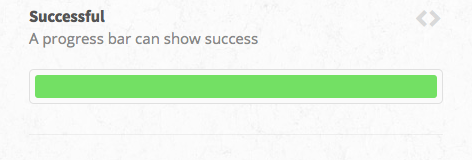
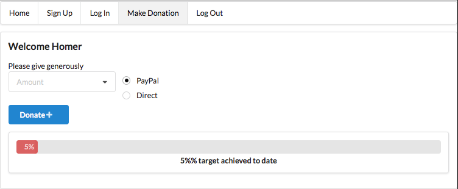
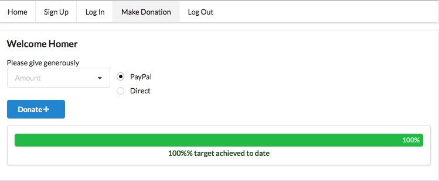

Step-by-step guide to building Donation application.
This iteration focusses on writing all necessary code to enable the progress bar to reflect the dynamic changes in cumulative donations. As previously, v3 will be built by adding to and where necessary modifying v2.
Features of iteration v3
Welcome
Sign on
Sign in
Donation : add a fully functioning progress bar
Sign out
Report
Progress bar
We will use a Semantic UI progress bar.

We must now provide this code with dynamic data:
Following are the steps to do this:
Two new methods are required in DonationController. The first, getDonationTarget, is a method to set the target amount required. This is a hack: we really ought to write an administrative panel or equivalent so as to allow a user to make this configuration. As an improvement, consider reading the target amount from a configuration file that you provide.
The other method, getPercentTargetAchieved,
Method: DonationController.getDonationTarget()
private static long getDonationTarget()
{
// TODO Input this value thro' html template admin controlled
return 20000;
}
public static String getPercentTargetAchieved()
{
List<Donation> allDonations = Donation.findAll();
long total = 0;
for (Donation donation : allDonations)
{
total += donation.received;
}
long target = getDonationTarget();
long percentachieved = (total * 100 / target);
String progress = String.valueOf(percentachieved);
Logger.info("Percent of target achieved (string) " + progress
+ " percentachieved (long)= " + percentachieved);
return progress;
}This import is required:
import java.util.List;It is also necessary to modify the index method in DonationController to invoke getPercenTargetAchieved.
Method: DonationController.index()
public static void index()
{
User user = Accounts.getCurrentUser();
if (user == null)
{
Accounts.login();
}
else
{
String prog = getPercentTargetAchieved();
String progress = prog + "%";
Logger.info("Donation ctrler : user is " + user.email);
Logger.info("Donation ctrler : percent target achieved " + progress);
render(user, progress);
}
}Here is the code for the progress bar:
<!-- Donation progress bar -->
<div class="ui segment">
<div class="ui indicating progress" id="progress">
<div class="bar">
<div class="progress"></div>
</div>
<div class="label">${progress}% target achieved to date</div>
</div>
</div>
<script>$('#progress').progress('increment', '${progress}');</script>
<!-- End progress bar -->Test
Test the iteration by:
 
Commit this iteration to your donation repository, add a tag and push all to remote repo.
git add .
git commit -m 'iteration v3'
git tag -a v3 -m 'iteration v3'
git push && git push --tags